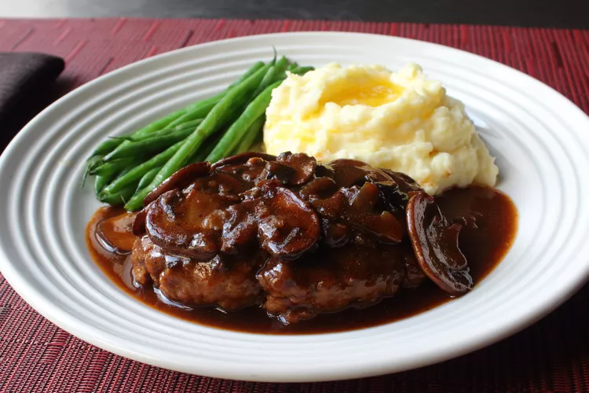

Chef John's Salisbury Steak

Description
When I was a kid, we didn't have smartphones or the internet — all we had was a TV. But we didn't care because as we watched, we got to enjoy a little something called a "TV dinner." The king of those dinners, in my opinion, was the Salisbury steak, which is what I'll show you how to make here, along with one of the greatest gravies ever invented. Serve with buttered mashed potatoes and a vegetable side of your choice.
Ingredients
Steaks
- 1 pound 85% lean ground beef
- ½ cup plain bread crumbs
- 1 large egg, beaten
- 2 tablespoons ketchup
- 1 tablespoon Worcestershire sauce
- 1 teaspoon dry mustard
- 1 teaspoon soy sauce
- ½ teaspoon freshly ground black pepper
- 1 pinch cayenne pepper, or to taste
- 2 tablespoons salted butter
Gravy
- 2 tablespoons salted butter
- 12 large white button mushrooms, sliced
- cup diced onion
- salt to taste
- 2 tablespoons all-purpose flour
- 3 cups high-quality, low-sodium beef broth
- 2 tablespoons ketchup
- 1 tablespoon Worcestershire sauce
Steps
- Prepare the steaks: Mix ground beef, bread crumbs, egg, ketchup, Worcestershire sauce, mustard, soy sauce, pepper, and cayenne together in a mixing bowl with a fork or your hands until well combined. Cover with plastic wrap and refrigerate for at least 2 hours or overnight.
- When almost ready to cook the steaks, make the gravy: Melt butter in a large nonstick skillet over high heat. Add mushrooms, onion, and salt; sauté until nicely browned, 5 to 8 minutes. Reduce the heat to medium and add flour; cook and stir for 3 minutes.
- Stir in broth, ketchup, and Worcestershire sauce. Increase the heat to high and bring to a simmer. Reduce the heat to medium and cook, stirring occasionally, until gravy thickens slightly and reduces, about 10 minutes. Taste and adjust salt as needed.
- Transfer gravy to a liquid measure. Scrape the pan clean with a spatula.
- Finish the steaks: Remove meat from the refrigerator and divide into four equal portions. Moisten hands and form each portion into a 1/2-inch-thick oval patty. Lightly season both sides of patties with salt.
- Melt butter in the clean skillet over medium-high heat. Add patties and cook until browned, 2 to 3 minutes per side. Pour in gravy and bring to a simmer. Reduce the heat to medium and continue to cook until gravy is piping hot and steaks are no longer pink in the center, about 5 more minutes. An instant-read thermometer inserted into the center should read at least 160 degrees F (70 degrees C).
AllRecipes